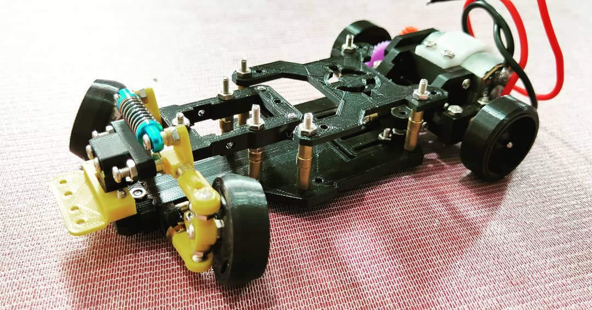
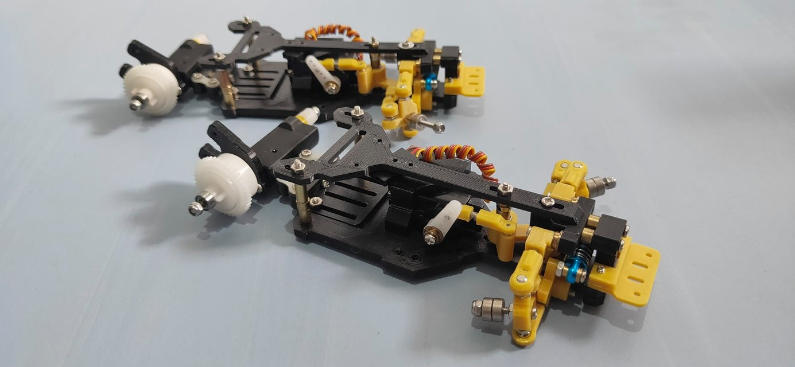

K-EP Fenrir¶

Quick facts¶
-
Developed by: K-Enhance Project(Al Kautsar Kilimanjaro)
-
Release: January 2021
-
Origin: Indonesia
-
Status: Discontinued
-
Production: Pre-order*
-
Scale: 1/24-1/28
-
Body mounting: Magnet mounting/MINI-Z?
-
Materials: PLA
Adjustability¶
At-a-glance¶
-
Wheelbase: ✅
-
Camber: Front ✅ / Rear ❌
-
Toe: Front ✅ / Rear ❌
-
Caster: ✅
-
Ackermann quick adjustment: ❌Stage I / ✅Stage II
-
Ride height: Front ✅/ Rear ❌
-
Track width: Front ✅ / Rear ✅
-
Front shocks: preload ✅ / angle ❌
-
Rear shocks: preload ✅ / angle ❌
-
Active systems: ❌
-
Motor position: mid ❌ / high ✅ / rear ✅
-
Servo position: ❌
-
Pinion-Spur distance: ❌
-
Front knuckle KPI hinge point: ❌
-
Front knuckle steering linkage hinge point: ❌
-
Steering rack linkage hinge point: ❌
Details¶
-
Wheelbase adjustment method: slider
-
Wheelbase range: 90–108 mm /96-112 mm (depending on rear bridge option)
-
Track width range: 74–?? mm
-
Caster adjustment: shims
-
Ackermann adjustment: steering linkages length
-
Rear toe behavior: static
Drivetrain¶
-
Gearbox type: gear-driven(plastic gears)
-
Motor orientation: transverse
-
Forces: anti-torque
-
Reversible: ❌
-
Differential: straight axle / open differential optional
Steering¶
-
Steering method: direct Stage I / bellcrank Stage II
-
Servo position: upper deck Stage I / lower deck Stage II
Suspension¶
-
Front: double wishbone, independent(monoshock coupled), 1 shock
-
Rear: pivot-mounted flex bridge(rear axle module is attached trough bearing, which allows it to rotate around the axis, enhancing body roll effect)
-
Shock type: friction shock
Community ratings¶
Notes¶
The predecessor of Fenrir is K-EP Slimmer
K-EP Fenrir stage 2:¶

Changes:
-
monoshock is now inside the bulkhead, installed on the lower arms
-
servo is placed on the lower deck, steering system changed to bellcrank
-
stepless Ackermann adjustment
-
thin upper deck
Sleipnir¶
After designing rear gearbox with double wishbone independent suspension, K-EP evolved to K-EP Sleipnir
Contribute¶
Have extra info or experience with this chassis? Contribute here